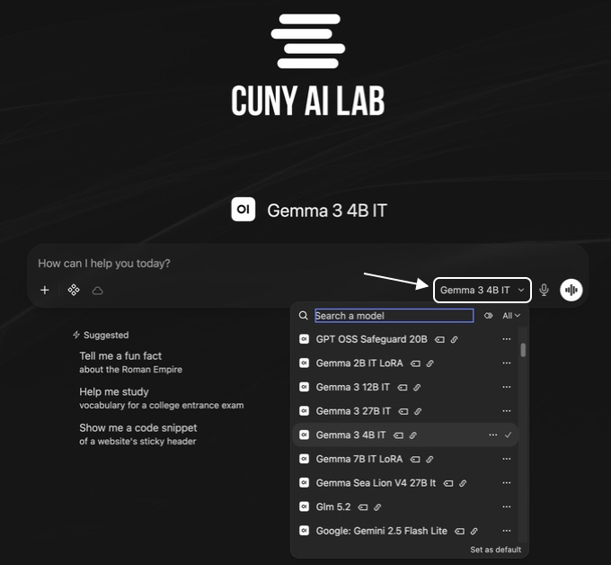
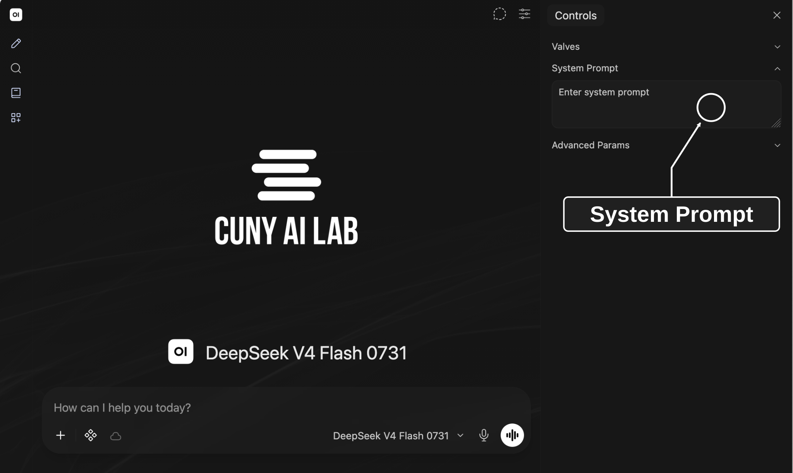
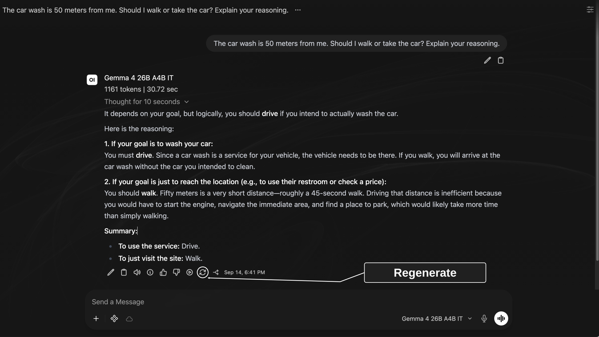
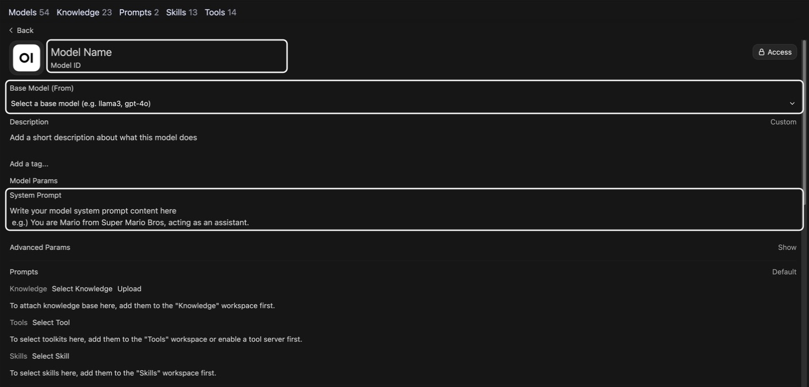
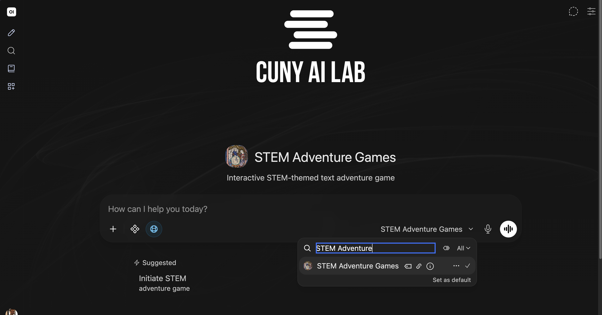
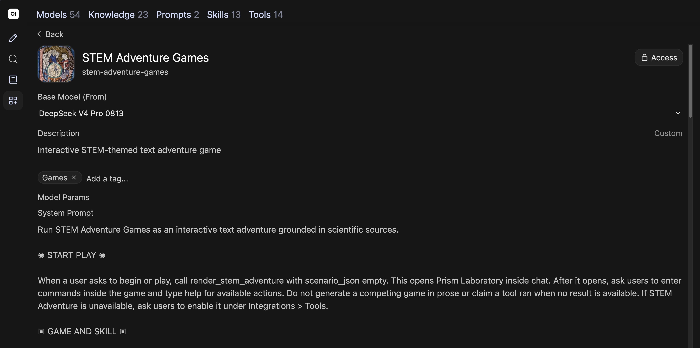

Workshop 1 of 3
Composing system prompts
Compare and configure models for teaching and research
CUNY AI Lab Sandbox
Developed by Zach Muhlbauer
Workshop Roadmap
- Composing system promptsConfigure model behavior with system prompts.
- Curating knowledge collectionsUpload documents so models can reference them.
- Configuring skills and toolsAdd web search, code execution, and reusable instructions.
Workshop Agenda
- Request individual access and sign in
- Define system prompts
- Compare responses from small models
- Revise in-chat system prompts
- Explore Workspace models
- Save prompts for reuse
Before attending, request individual access and sign into Sandbox.
Request Access
ailab.gc.cuny.edu/request-access/
- Choose My own access and sign in with CUNY Login.
- Complete your details, select CAIL Sandbox, and submit your application.
- After approval, open chat.ailab.gc.cuny.edu and select Continue with CUNY Login.
System Prompts
A system prompt gives a model instructions for its role, behavior, and focus.
User Prompts
Questions or tasks you enter in chat.
Base Models
A base model generates responses. A custom model adds instructions and resources to a chosen base model.
Test whether your selected model follows these instructions.
Open WebUI model configuration
Creating a custom model does not train a new base model.
Select Models

Chat Features
- Upload Files (+)
- Attach images, PDFs, or documents.
- Integrations
- Enable tools that perform operations and skills that give reusable instructions.
- Message actions
- Find actions beneath each response to copy, edit, or regenerate it. Open More (⋯) for additional actions.
Compare Models

Who Was Late?
Compare how two small models interpret this sentence.
The nurse yelled at the doctor because she was late. Who was late?
Send this question to both models.
Examine Assumptions
“She” could refer to either person. This sentence does not establish who was late.
- Does each model acknowledge ambiguity?
- What assumption supports its answer?
- Does either explanation add information absent from this sentence?
Compare Outputs
Consider this question.
The car wash is 50 meters from me. Should I walk or take the car? Explain your reasoning.
What do you think this person wants to accomplish?
Gemma’s Response

Qwen’s Response

Compare Models
Start a new chat, select two models, and send this question.
The car wash is 50 meters from me. Should I walk or take the car? Explain your reasoning.
Save both responses with your question and selected model IDs before adding system prompt instructions.
Add System Prompt
Copy these instructions for in-chat System Prompt.
Identify purpose and separate facts from assumptions. Ask one clarifying question when needed. Answer briefly without inventing context.
Open Chat Controls

Regenerate Responses

Compare Responses
- Compare responses before and after adding system prompt instructions.
- Does each response identify your goal and state its assumptions? Does either response invent information or ask unnecessary questions?
- Repeat our opening question about who was late. Do these instructions help identify ambiguity?
Open Workspace

Review Custom Models
Choose Models and open a custom model shared with you.
Review Base Model and System Prompt, then compare its instructions with your tested prompt.
Continue in chat if Workspace is unavailable.
Model Configuration

Add Prompt Suggestions
Add a description and prompt suggestions for tasks your model should support.
Users select your custom model to use its instructions and resources.
Situating System Prompts
Select STEM Games

STEM Adventure Games

Inspect System Prompt

Read Game Instructions
Read instructions for game commands and submitted records, used in Workshop 3.
STEM Adventure controls rooms, inventory, prerequisites, observations, and completion. Ask users to type discuss inside the game, review the message box, and send their record before interpreting their choices.
Which part runs game commands? What must users send before discussing their choices?
Adapt Research Prompts
Choose a research task, such as comparing article abstracts, checking how you coded a passage, or documenting a method.
- State your research question and identify permitted source material.
- Specify steps and what counts as evidence.
- Ask your model to explain uncertainty and consider other interpretations.
Save your source material, prompt, response, and assessment together.
Draft System Prompts
Define Prompt Components
Adapt STEM Adventure Games through these components.
- Context — Experiment, historical setting, and intended users.
- Procedure — Steps your model should follow.
- Constraints — Boundaries and missing information.
- Tone and format — Language, length, and presentation.
Define Context
Describe what your model should help users do.
- Who will use this model?
- Which experiment or research question will they explore?
- What prior knowledge can you assume?
Guide an interactive adventure about [experiment]. Users will explore [question] through [available choices or methods]. Use [source material] for historical context.
Write Procedures
Write numbered steps for your model to follow.
- What information should users provide first?
- Which steps must happen before your model responds?
- How should your model respond to different requests?
1. Open Prism Laboratory when users ask to play. 2. Let users enter commands inside the game. 3. Ask users to send a play record before interpreting their choices. 4. Check relevant sources before making historical claims.
Set Constraints
Specify how your model should handle missing evidence.
Do not invent historical details when sources are missing. Distinguish documented events from choices created for the game. If a source is unavailable, explain what cannot be checked.
Test a request that asks for a detail absent from your sources.
Set Tone
Describe how your model should address players.
Address the player as “you.” Use concise language for scenes and choices. Explain unfamiliar scientific terms when they first appear.
Which terms need explanation for your intended users?
Specify Format
Specify how your model should discuss a submitted record.
Observed decision: [Command and result] Prerequisite: [Condition required for that action] Source comparison: [What historical evidence supports] Question: [One limitation to examine]
Refine Instructions
Extend Instructions
- Specify what happens when a player asks for a hint.
- Explain how to revisit an earlier decision.
- Require source checks when players ask about historical claims.
- Test how your model responds when evidence is missing.
Review Common Problems
Prioritize Instructions
Check instructions for conflicts. Prioritize essential steps and test whether your model follows them.
Resolve Contradictions
Check whether requested detail fits your length limit. Revise requirements that cannot be met together.
Test Player Requests
Test game choices, requests for hints, and questions about sources.
Retest Revised Prompts
Save each prompt version with its responses. Revise when a test reveals a problem, then repeat that test.
Save Prompts
Save your tested prompt in a private custom model. Choose a base model, review Access, and select Save & Create. Reuse this model when adding documents in Workshop 2.
Share Custom Models
- Open Access → Add Access and select users or a course group.
- Grant Read access to people who will use your model and Write access to people who will edit it.
- Confirm everyone you share with can access your base model and attached collections, skills, and tools.
Record Comparisons
Save your prompt, model settings, and responses.
| Configuration | Custom model name, base model, system prompt, settings, and date. |
|---|---|
| Test | User request, enabled features, saved response. |
| Judgment | What you checked, evidence from each response, and any change you plan to test. |
Use materials you are permitted to upload and share. Sandbox chats may be stored and accessible to administrators or people you share them with.
Prepare Source Documents
- Save prompt versions and comparison notes
- Request Workspace and Knowledge collection access
- Select public or approved source documents
- Review system-prompt examples
- Continue to Curating knowledge collections